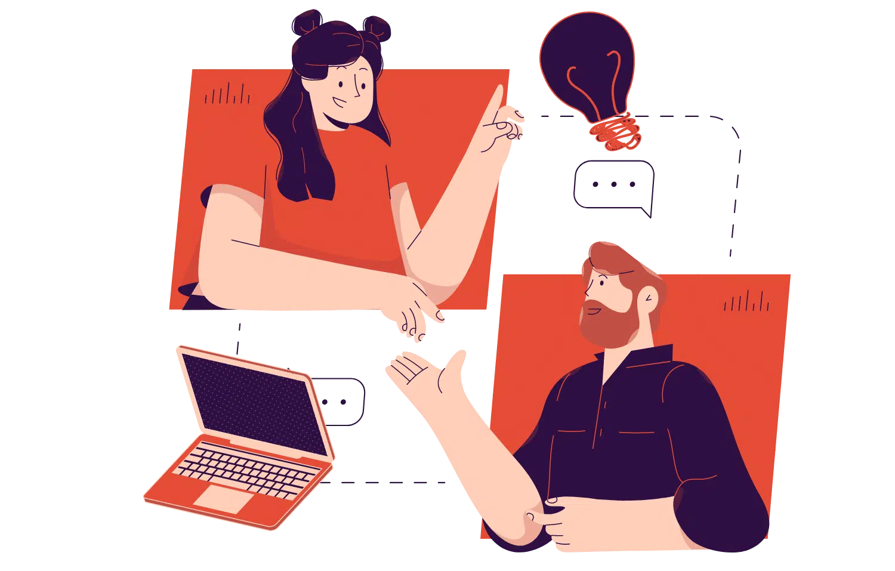
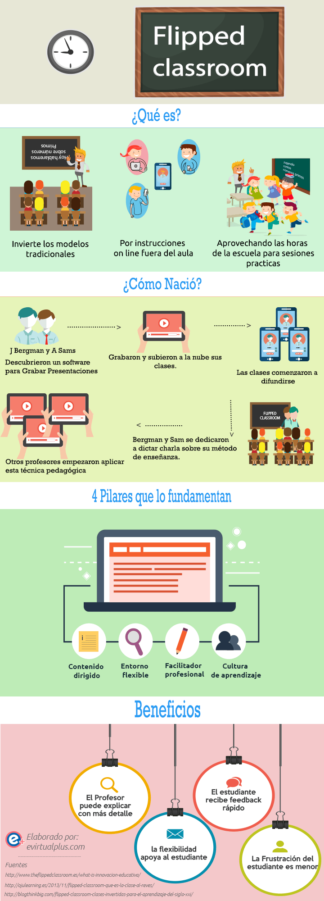
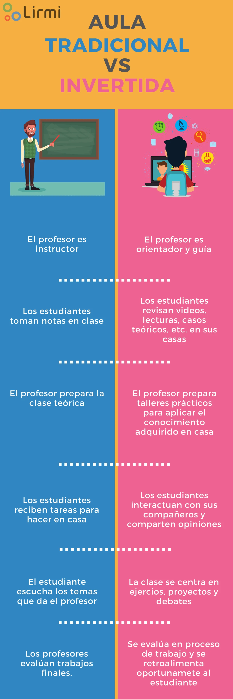
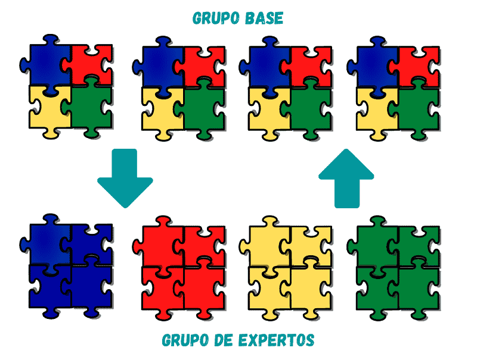
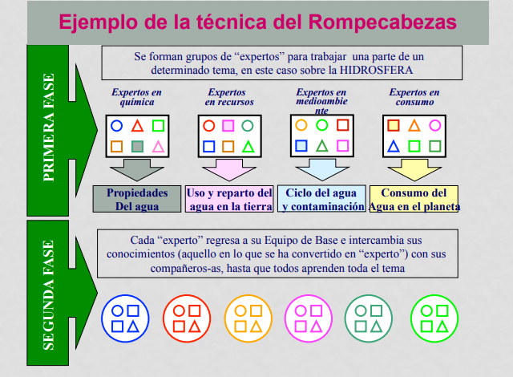

El aula invertida es una metodología educativa que cambia el paradigma tradicional de enseñanza. En lugar de que los estudiantes adquieran conocimientos en el aula y realicen tareas en casa, el aula invertida implica que los estudiantes adquieran conocimientos previamente a través de recursos como videos, lecturas o actividades en línea, y luego utilicen el tiempo en el aula para discutir, practicar y aplicar lo aprendido.
Esta metodología promueve un aprendizaje más activo y participativo, ya que los estudiantes tienen la oportunidad de trabajar en colaboración, resolver problemas y recibir retroalimentación directa del maestro.
El aula invertida es:
Y sus pilares son:
Las principales diferencias entre el aula tradicional y el aula invertida son:
Algunas ventajas de utilizar el Aula Invertida son:
Promueve un aprendizaje activo y participativo.
Permite adaptar el ritmo de aprendizaje a las necesidades individuales de los estudiantes.
Fomenta la colaboración y el trabajo en equipo.
Proporciona una retroalimentación más inmediata y personalizada.
Desarrolla habilidades de autogestión y responsabilidad en el aprendizaje.
El puzzle de Aronson, también conocido como "jigsaw classroom" en inglés, es una técnica de enseñanza cooperativa desarrollada por el psicólogo social Elliot Aronson en la década de 1970. Esta metodología fue concebida inicialmente como una estrategia para reducir la hostilidad y los prejuicios raciales en las escuelas tras la integración de estudiantes de diferentes orígenes raciales en Texas, Estados Unidos.
El puzzle de Aronson es una herramienta poderosa para promover un ambiente de aprendizaje inclusivo y efectivo, donde todos los estudiantes pueden contribuir y beneficiarse del conocimiento colectivo del grupo.
El puzzle de Aronson consiste en:
Y sus pilares son:
1. División de la clase en grupos heterogéneos: La clase se divide en pequeños grupos de 5-6 estudiantes, asegurándose de que cada grupo sea lo más diverso posible en términos de habilidades, género, etnicidad y otros factores.
2. Asignación de temas: El material de estudio se divide en secciones, y a cada miembro del grupo se le asigna una sección específica del contenido. Cada estudiante es responsable de aprender y enseñar su parte a los demás miembros de su grupo.
3. Grupos de expertos: Los estudiantes que tienen la misma sección del material se reúnen en "grupos de expertos" para discutir y dominar esa parte del contenido. Estos grupos de expertos trabajan juntos para asegurarse de que todos comprendan bien su sección.
4. Enseñanza en los grupos originales: Después de trabajar en los grupos de expertos, los estudiantes regresan a sus grupos originales y enseñan su sección del material a sus compañeros. Cada estudiante debe explicar su parte de manera que los demás la entiendan, promoviendo así la colaboración y la interdependencia.
5. Evaluación y reflexión: La comprensión del material por parte de todos los estudiantes es evaluada a través de exámenes, discusiones en clase o proyectos. Además, los estudiantes pueden reflexionar sobre el proceso de aprendizaje cooperativo y cómo ha contribuido a su comprensión y habilidades sociales.
Algunas ventajas de utilizar el Puzzle de Aronson son:
Mejora del rendimiento académico: Al trabajar en grupos cooperativos, los estudiantes tienden a mejorar su comprensión del material y su rendimiento en las evaluaciones.
Desarrollo de habilidades sociales: La técnica fomenta habilidades como la comunicación, la colaboración y el respeto por las perspectivas de los demás.
Reducción de prejuicios y aumento de la empatía: Al trabajar con compañeros de diferentes orígenes y habilidades, los estudiantes pueden desarrollar una mayor comprensión y empatía hacia los demás, reduciendo actitudes prejuiciosas y fomentando un ambiente más inclusivo.
Responsabilidad compartida: Cada estudiante es responsable no solo de su propio aprendizaje, sino también del aprendizaje de sus compañeros, lo que crea un sentido de responsabilidad compartida.